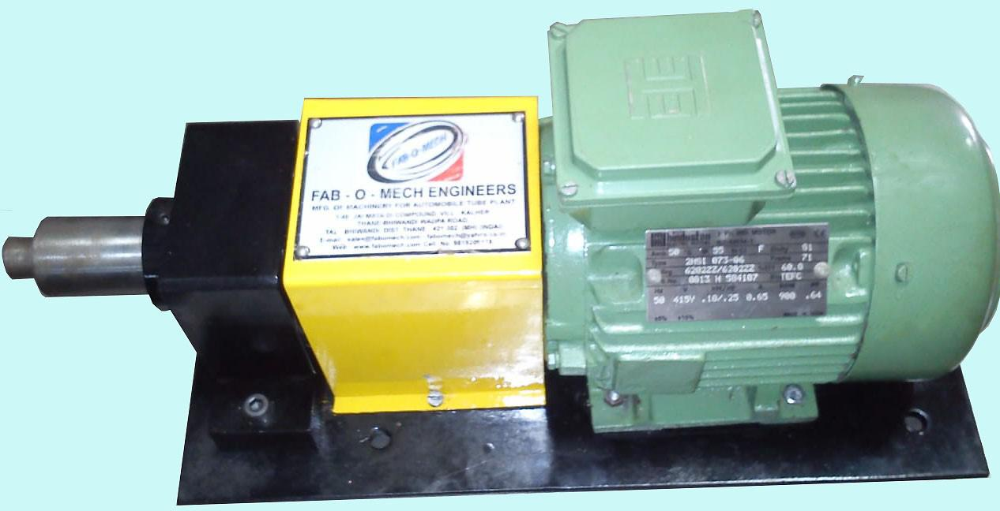
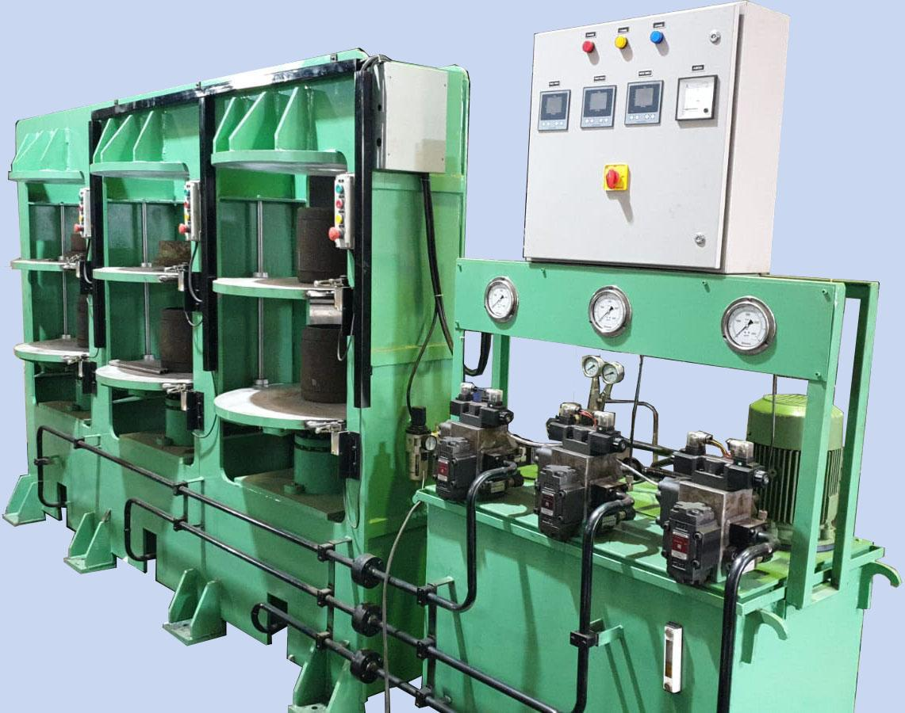

Related Machines

CORE FIXING MACHINE
A compact, high-efficiency unit designed to securely tighten valve cores into inner tubes. the machine features an adjustable tightening force mechanism to ensure consistent, reliable assembly of valve components.
View Details
TUBE CURING PRESS
A high-precision hydraulic system engineered for the uniform vulcanization of inner tubes. Utilizing advanced thermal regulation and synchronized hydraulic pressure control, the machine ensures consistent curing profiles, resulting in structural integrity and durability across a comprehensive range of tube dimensions, from high-pressure bicycle tubes to large-scale Off-The-Road (OTR) applications.
View DetailsH-250 HYDRAULIC SPLICER
A high-production hydraulic joining system engineered for the precise splicing of rubber inner tubes. Featuring a PLC-operated Delta control interface and sinking-type knife carriage on linear motion guides, this machine ensures consistent, airtight butt-welded joints for tubes up to 250mm in width, achieving rates of 140–150 tubes per hour.
View Details